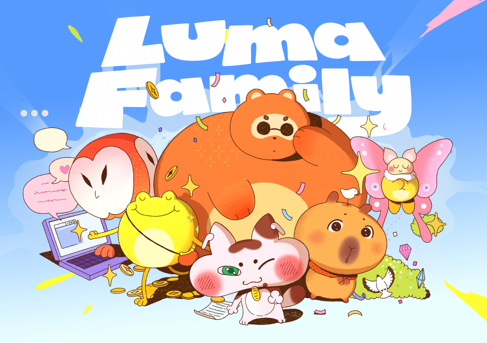

Luma Family 个人 IP 设计

IP Design

Brand Overview
 IP case introduction
IP case introduction
项目介绍 /
- IP设计
- 个人项目
< Luma Family > 是我自主发起的个人品牌项目，
围绕“守护者”这一主题创造出多个具有性格的动物角色。
通过构建视觉系统，并扩展为网页交互、周边设计。
该项目应用于线下展览，通过展示制品、创造互动场景
打造Luma独特的IP体验
Luma is a self-initiated personal brand project centered around the theme of “guardians,” featuring a cast of animal characters, each with a distinct personality.
The project builds a cohesive visual identity and extends into interactive web experiences and merchandise design.
Bringing together illustration, animation, UI/UX, and brand storytelling, Luma explores the potential of IP design to foster emotional connections.

<2025>